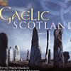

Celtic Lyrics Corner > Compilations > Gaelic Scotland 2 > Soraidh Bhuam Gu Eilean Bharraigh
|  | Soraidh Bhuam Gu Eilean Bharraigh |
| Credits : | Traditional; arranged by Maeve MacKinnon |
| Appears On : | Gaelic Scotland 2 (compilation) |
| Language : | Gàidhlig (Scottish Gaelic) |
| Lyrics : | English Translation : |
| Soraidh bhuam gu Eilean Bharraigh | Greetings to the Isle of Barra |
| Far an d' fhuair mi'm t-aran og | Where I was nurtured as a child |
| Far am bith nan sgothan sgadain | Where the herring boats |
| A tighinn dhachaigh le'n trom lod | Come home with their heavy load |
| B'aluinn sealladh orr' an tacadh | What a beautiful sight with all their rigging |
| Le siuil chairte cruaidh mu sroin | And their sails pulled tight on the bow |
| Tighinn a steach do Bagh a Chaisteal | Coming in to Castlebay |
| 'S gillean sgairteal unnd air bord | With the strong boys an board |
| Tha seann mharnlaiche nan gaillion | The old weather forecaster of the storm |
| Heathabhal le claigionn lom | Heathaval with its bare head |
| A cuir fios a h-uile madainn | Sending word of bad weather |
| Dh'ionnsaidh maraichean nan tonn | To the sailors of the deep |
| 'S ged a bhiodh iad air a chuan | And although they would be far out to sea |
| A tarraing lion nan dubhan crom | Drawing nets with the fishing hooks |
| 'S cinnteach iad gun tig an cunnart | They can be sure there will be danger |
| Nuair th'ann cubhrachd air a ceann | When her peaks are covered in mist |
| Be mo mhiann bhi'n talla dannsa | It is my wish to be in the dance hall |
| Na'm do'n phiob bhith cuir gu ceol | Where the pipes would be playing |
| Gille gleusda gleusadh sionnsair | The sharp lad tuning the chanter |
| 'S cha b'ann meall a bhiodh a mheoir | And his fingers would not be slow |
| Bhiodh gach maighdean bhanail bhannda | Every lovely young maiden |
| 'Si air laimh aig gallan og | On the arm of a gent |
| Cumail tim le grinneas bhain-tighearn' | Keeping time with the grace of a lady |
| Null 'sa nall air urlar bhord | Backwards and forwards over the dance floor |
| Ged is beannach greanach fiadhaich | Although it is hilly, rugged and wild |
| Barraigh riobhach bheag nan ob | Lovely little Barra of the inlets |
| Leams' cha bhith i le cho breagha | To me it could not be any more beautiful |
| Ged bhiodh a creagan liath nan or | If its gray rocks were made of gold |
| Aite taimh nam fiuran fialaidh | A place where the kind-hearted gallant men live |
| 'Is na nionag mhaiseach og | And the pretty young maidens |
| Cha do sheas fo bhrat na h-iarmailt | Never have stood beneath the sky |
| Daoine riamh cho ciatach coir | Kinder and more hospitable people |
| Barraigh Chiar nan iasgair sar mhath | Gray Barra of the exceptional fishermen |
| Sheoladh ard air bharr nan stuagh | Who would sail on the high waves |
| 'S fhada cian o'n chaidh an fhagail | Long since have their young |
| Thoirt do'n al aice mar dhuais | Been accustomed to leaving |
| 'S gus an sguir an lionadh mara | Until the tides stop |
| Leantainn rian na gealaich shuas | Being controlled by the moon |
| Bi a bhuaidh ud aig na Barraich | The Barra people will have that victory |
| Urram maraichean an tonn | Respected sailors of the sea |
| Urram maraichean an tonn | Respected sailors of the sea |
| Urram maraichean an tonn | Respected sailors of the sea |
| Bi a bhuaidh ud aig na Barraich | The Barra people will have that victory |
| Urram maraichean an tonn | Respected sailors of the sea |